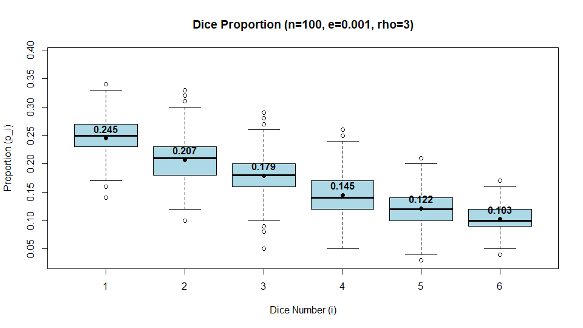
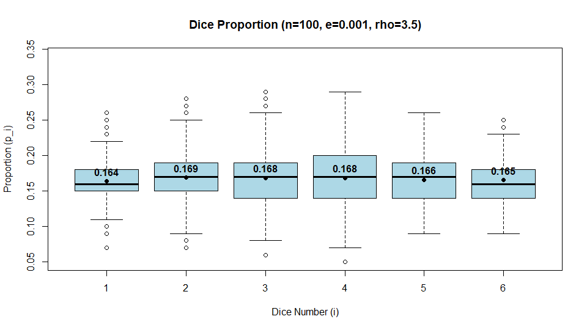
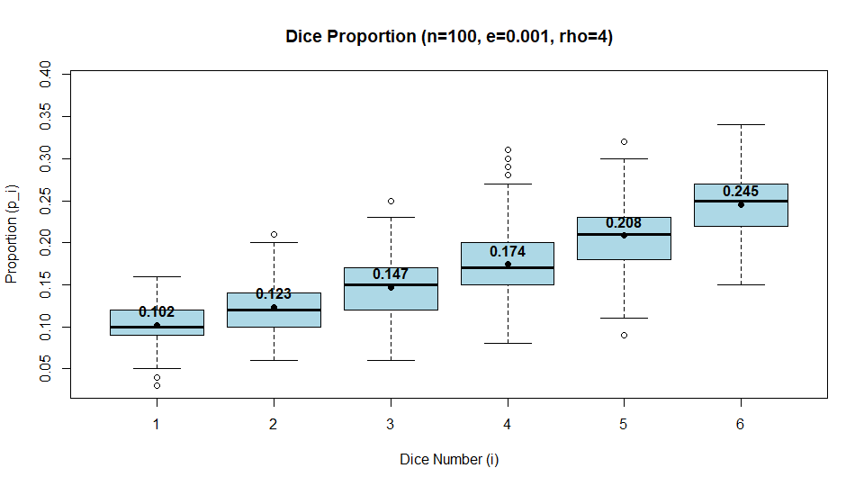

coin = c(0,1)
# 1 and 0 for head and tail respectively
# Number of trials
N = 10000
# Values of n for this simulation
n = 200
vec_trial = NULL
vec_prob = NULL
for(n in 2:n){
for(i in 1:N){
# Number of heads in Mary's tosses
M = sum(sample(coin,size=n+1, replace=TRUE))
# Number of heads in John's tosses
J = sum(sample(coin,size=n, replace=TRUE))
if (M>J){
vec_trial[i] = 1
}
else {
vec_trial[i] = 0
}
}
vec_prob[n-1] = sum(vec_trial)/N
}
plot(2:n, vec_prob, type="l" , ylim = c(0,1), main="Probability that Mary gets more heads than John", sub="Number of trials for each n = 10000", xlab="n", ylab="Probability")# Number of trials
N = 10000
# Values of n for this simulation
n = 20
vec_n = 1:n
vec_prob = NULL
for (m in 1:n){
valid_outcome = 0
boxes_label = 1:m
for (k in 1:N){
num_balls_in_boxes = rep.int(0, times=m)
for (i in 1:m){
box_chosen = sample(boxes_label, size=1)
num_balls_in_boxes[box_chosen] = num_balls_in_boxes[box_chosen] + 1
}
if (sum(num_balls_in_boxes==0) == 1){
valid_outcome = valid_outcome + 1
}
}
vec_prob[m] = valid_outcome/N
}
stirling <- function(n) {
# Use Stirling to obtain this formula
fn = (n * (n - 1) * sqrt(2 * pi * n)) / (2 * exp(n))
return(fn)
}
plot(vec_n, vec_prob, type="l", main="Probability that exactly one box is empty", sub="Number of trials for each n = 10000", xlab="n", ylab="Probability", col="red")
lines(vec_n, stirling(vec_n), type="l", col="blue")
# Number of trials
N = 100000
# Number of balls in the urn at the end
n = 1000
# Vector consisting of number of white balls when the urn has n balls
vec_trial = 0
for(i in 1:N){
# Initially the urn contains one white (represented by 1) and one black (represented by 0)
urn = c(1,0)
k = length(urn)
while(k<n){
urn[k+1] = sample(urn, size=1) # Draw a ball from the urn
k = length(urn)
}
vec_trial[i] = sum(urn)
}
# Find the probability of getting i white balls out of n balls
vec_prob <- tabulate(vec_trial, nbins = n-1) / N
vec_i = 1:(n-1) # There is no way to have n white balls
plot(vec_i, vec_prob, type="l", ylim=c(0, 0.002), main="Probability to Get i White Balls out of n Balls", sub="n = 1000, Number of trials for each n = 100000", xlab="Number of white balls in the urn", ylab="Probability")
abline(a=1/(n-1), b=0, col="blue")
# ==========================================
# Parameters
# ==========================================
n <- 100 # The number of rolls in a trial
e <- 0.001 # The error bound
N <- 500 # The number of successful samples
rho <- 4 # Target expected value (real number between 1 and 6)
# ==========================================
# Initialization
# ==========================================
# Matrix to store the proportions of the N valid samples
valid_p <- matrix(0, nrow = N, ncol = 6)
# Vector to store the entropy of the N valid samples
valid_H <- numeric(N)
count <- 0
# Set seed for reproducibility (optional)
set.seed(123)
# ==========================================
# Sampling Method (Rejection Sampling)
# ==========================================
cat("Sampling in progress. This may take a few seconds depending on the acceptance rate...\n")
while (count < N) {
# 1. Roll a die n times
rolls <- sample(1:6, n, replace = TRUE)
# 2. Calculate the proportions p_i for each i = 1,...,6
# tabulate() with nbins=6 ensures we always get a vector of length 6
counts <- tabulate(rolls, nbins = 6)
p <- counts / n
# 3. Evaluate S = sum(i * p_i)
S <- sum((1:6) * p)
# 4. Check if the sample is valid within the error bound e
if (abs(S - rho) < e) {
count <- count + 1
valid_p[count, ] <- p
# Calculate Entropy H = -sum(p_i * log(p_i))
# Filter out p_i = 0 to apply the convention 0 * log(0) = 0
p_pos <- p[p > 0]
H <- -sum(p_pos * log(p_pos))
valid_H[count] <- H
}
}
# ==========================================
# Data Analysis & Visualization
# ==========================================
# 1. Boxplot
# Create the boxplot for the proportions
boxplot(valid_p,
names = 1:6,
main = sprintf("Dice Proportion (n=%d, e=%g, rho=%g)", n, e, rho),
xlab = "Dice Number (i)",
ylab = "Proportion (p_i)",
col = "lightblue",
ylim = c(min(valid_p), max(valid_p) + 0.05)) # Add a little top margin for text
# Calculate the mean proportion for each number
mean_p <- colMeans(valid_p)
# Display the mean values in the boxplot
points(1:6, mean_p, col = "black", pch = 19)
text(1:6, mean_p, labels = round(mean_p, 3), pos = 3, col = "black", font = 2)
# 2. Table for entropy
# Use summary() to get standard statistics and append the standard deviation
H_summary <- summary(valid_H)
H_sd <- sd(valid_H)
# Combine into a single table object
H_table <- as.table(c(H_summary, "Std. Dev." = H_sd))
cat("\nSummary Table for Entropy (H):\n")
print(H_table)


Suppose a die is rolled $n$ times. I wish to find the proportions $p_i$ of each
number $i =1,\dots, 6$ in the $n$ rolls such that $\sum_{i=1}^6 i p_i = \rho$,
where $1 \leq \rho \leq 6$ is a real number. After finding valid proportions,
calculate $H=-\sum_{i=1}^6 p_i \log p_i$. Note that if any $p_i = 0$, $p_i \log
p_i$ is defined to be $0$ by convention.
Write an R code for this task.
### Parameters at the top of the R code
- `n`: The number of rolls in a trial (by default 100)
- `e`: The error bound (by default 0.001).
- `N`: The number of successful samples (by default 500).
- `rho`: A real number between 1 and 6 (by default 4).
### Sampling method
- Use rejection sampling. For each trial, roll a die $n$ times and calculate the
proportions $p_i$ for each $i=1,\dots, 6$.
- Evaluate $S = \sum_{i=1}^6 i p_i$.
- If $|S - \rho| < e$, take this trial as a valid sample and calculate $H=-
\sum_{i=1}^6 p_i \log p_i$. Otherwise, reject it.
- Repeat this process using a while loop until we have exactly $N$ samples.
### Data analysis
#### Boxplot
- Use `boxplot()` to show the proportions $p_i$ for $i=1,\dots, 6$ across all
$N$ samples.
- Use the title `sprintf("Dice Proportion (n=%d, e=%g, rho=%g)", n, e, rho)`.
- Display the values of the mean proportion for each number in the boxplot using
the `text()` and `points()` functions. You shall round the values to 3 decimal
places to avoid awkwardly long expression.
#### Table for entropy
- Calculate $H=-\sum_{i=1}^6 p_i \log p_i$ for each of the `N` valid samples.
- Use `summary()` to create a summary table showing the mean and standard
deviation of the values.